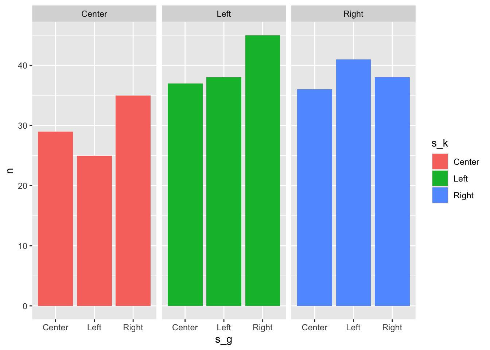

See the code
# comments look like this
print("This is R code")[1] "This is R code"On homework 3, I ask you use some statistics about the class data from activity 6 to relate to theoretical predictions. I realised not everyone has taken a stats or metrics class yet, so I wanted to post some pieces of R code as examples of starting places to help you answer this question.
Feel free to use as much (or to ignore) of the code provided as you want, but keep in mind that just copying these statistics without applying them to specific theoretical predictions will not be enough to earn you credit for this assignment.
Click on any heading with > See the code to reveal hidden code chunks:
# comments look like this
print("This is R code")[1] "This is R code"I collected the results from the in-class penalty kicks activity as a csv file where each row represents an different attempted shot.
The columns round, match, and shot contain the id representing which round in the bracket, which match of that specific round, and whether that shot was the first, second, third, fourth, or fifth shot of that match, respectively.
To make these data easier to visualize and calculate statistics, you can import them to an object in R using the read_csv function from the tidyverse package.
# load tidyverse packages
library(tidyverse)
# setwd("activities/06PenaltyKicks")
# read in the class results from csv file
data <- read_csv("EC327F25-activity6_results.csv")
# print the first 10 observations
head(data, n = 10)# A tibble: 10 × 10
round match kicker goalie shot kick dive goal winner final_score
<dbl> <dbl> <chr> <chr> <chr> <chr> <chr> <lgl> <chr> <chr>
1 1 1 Owen Alejandro shot 1 Left Left TRUE Owen Owen:3 Ale…
2 1 1 Alejandro Owen shot 1 Left Left FALSE Owen Owen:3 Ale…
3 1 1 Owen Alejandro shot 2 Right Right FALSE Owen Owen:3 Ale…
4 1 1 Alejandro Owen shot 2 Center Left FALSE Owen Owen:3 Ale…
5 1 1 Owen Alejandro shot 3 Left Left FALSE Owen Owen:3 Ale…
6 1 1 Alejandro Owen shot 3 Left Center TRUE Owen Owen:3 Ale…
7 1 1 Owen Alejandro shot 4 Left Center TRUE Owen Owen:3 Ale…
8 1 1 Alejandro Owen shot 4 Left Right TRUE Owen Owen:3 Ale…
9 1 1 Owen Alejandro shot 5 Right Center FALSE Owen Owen:3 Ale…
10 1 1 Alejandro Owen shot 5 Right Right FALSE Owen Owen:3 Ale…The important variables are the choices of the kicker and goalie for each kick attempt as well as whether a goal was scored or not:
kick represents the direction the kicker chose to kickdive represents the direction the goalie chose to attempt to blockgoal is an indicator which is TRUE if a goal was scored, and FALSE if a kick was blocked or missed.N <- nrow(data)Across all rounds and matches played in class this quarter, we had 320 different shots attempted, which are each a row in this dataset.
data |>
group_by(kick) |>
summarise(
n = n(),
p = n / N,
goals = sum(goal),
avg_goal = mean(goal)
) |>
ggplot(aes(x="", fill=kick, y=p)) +
geom_bar(stat = "identity", width=1, color="white") +
coord_polar("y",start=0) +
theme_void() +
# geom_text(aes(label = s_k), position = position_stack(vjust = 0.5)) +
geom_text(aes(label = p), position = position_stack(vjust = 0.5))
data |>
group_by(dive) |>
summarise(
n = n(),
p = n / N,
goals = sum(goal),
avg_goal = mean(goal)
) |>
ggplot(aes(x="", fill=dive, y=p)) +
geom_bar(stat = "identity", width=1, color="white") +
coord_polar("y",start=0) +
theme_void() +
# geom_text(aes(label = s_k), position = position_stack(vjust = 0.5)) +
geom_text(aes(label = p), position = position_stack(vjust = 0.5))
data |>
group_by(kick) |>
summarise(
n = n(),
goals = sum(goal),
win_rate = goals / n
)# A tibble: 3 × 4
kick n goals win_rate
<chr> <int> <int> <dbl>
1 Center 74 34 0.459
2 Left 130 87 0.669
3 Right 116 72 0.621data |>
group_by(dive) |>
summarise(
n = n(),
goals = sum(goal),
win_rate = goals / n
)# A tibble: 3 × 4
dive n goals win_rate
<chr> <int> <int> <dbl>
1 Center 99 61 0.616
2 Left 108 64 0.593
3 Right 113 68 0.602Think about how you could compare the theory of mixed-strategy Nash equilibrium against the data generated from class.
What are some hypotheses you could generate using the theory to compare to statistics from the activity?